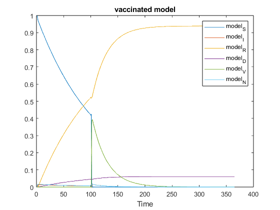
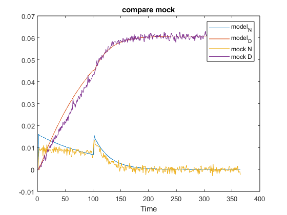
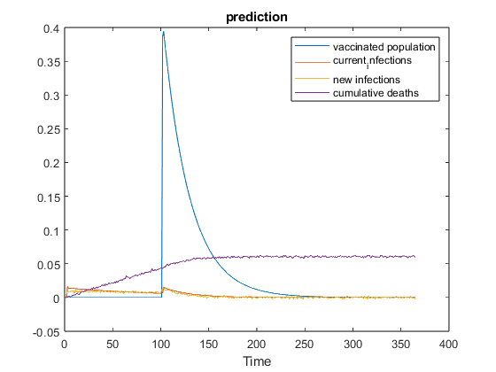

Contents
load given mock data
close all,clc,clear
load mockdata.mat
mockdata = [newInfections.',cumulativeDeaths.'];
t = length(newInfections);
set up constraints and initial
A = [];
b = [];
Af = ones(1,6);
bf = 2;
ub = ones(1,6);
lb = zeros(1,6);
x0 = [0.01,0.002,0.07,0.001,0.005,0.04];
first 100 days without vaccine
t1 = 100;
mockdata100 = mockdata(1:100, :);
sirafun= @(x)vaccine_sirafun_first100(x,t1,mockdata100);
[x100,fval] = fmincon(sirafun,x0,A,b,Af,bf,lb,ub);
disp(x100)
disp(fval)
Y_fit_100 = vaccine_sir_first100(x100,t1);
Local minimum possible. Constraints satisfied.
fmincon stopped because the size of the current step is less than
the value of the step size tolerance and constraints are
satisfied to within the value of the constraint tolerance.
0.0160 0.0486 0.5604 0.4313 0.4321 0.5115
0.0024
The rest 265 days with vaccine released
t2 = 265;
mockdatarest = mockdata(101:365, :);
sirafun= @(x)vaccine_sirafun(x,t2,mockdatarest);
[x,fval] = fmincon(sirafun,x0,A,b,Af,bf,lb,ub);
disp(x)
disp(fval)
Y_fit = vaccine_sir(x,t2);
Local minimum found that satisfies the constraints.
Optimization completed because the objective function is non-decreasing in
feasible directions, to within the value of the optimality tolerance,
and constraints are satisfied to within the value of the constraint tolerance.
0.0364 0.0367 0.9820 0.9092 0.0355 0.0002
7.3329e-04
concanate the results and plot
Y_fit = [Y_fit_100; Y_fit];
figure();
plot(Y_fit);
xlabel('Time')
legend('model_S','model_I','model_R','model_D','model_V', 'model_N')
title('vaccinated model')

compare the model with the given mock data
Y_fit= [Y_fit, mockdata];
Y_compare = [6 4 7 8];
Y_compare = Y_fit(:, Y_compare);
figure();
plot(Y_compare);
xlabel('Time')
legend('model_N', 'model_D','mock N','mock D')
title('compare mock')

action item implement
Y_action = [5 2 7 8];
Y_action = Y_fit(:, Y_action);
figure();
plot(Y_action);
xlabel('Time')
legend('vaccinated population', 'current_infections','new infections','cumulative deaths')
title('prediction')

competition
vaxpop = Y_fit(:, 5);
vaxbreak = Y_fit(:, 2);